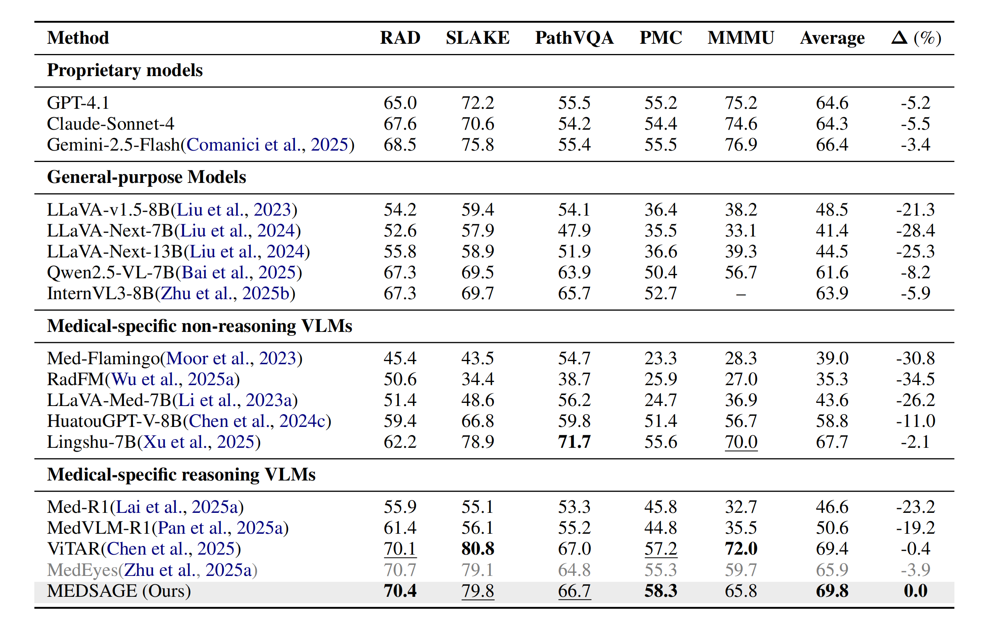
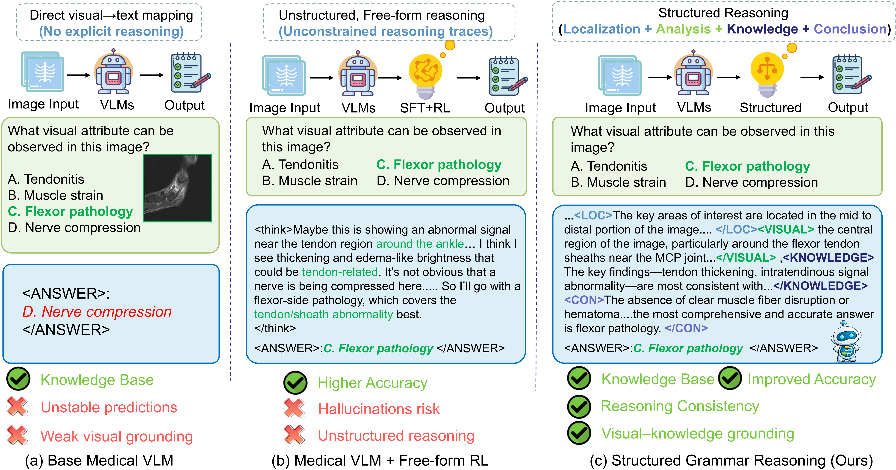
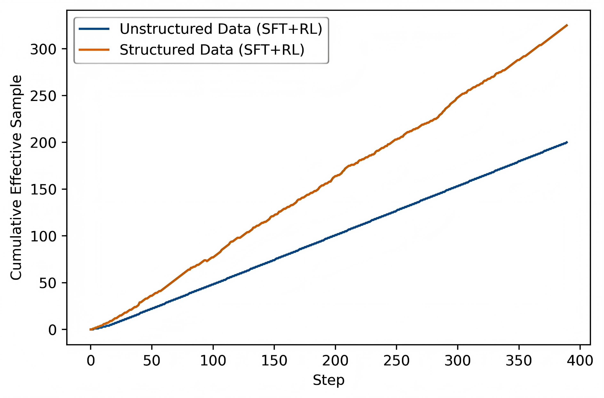
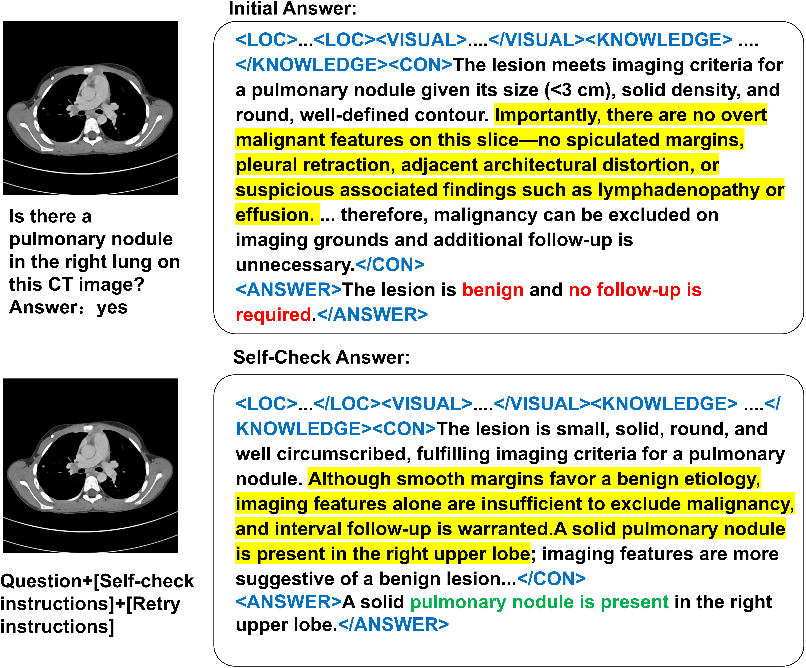

MEDSAGE: Learning Structured Medical Visual Reasoning with a Structured Reasoning Scaffold
Abstract
Reinforcement learning (RL) can improve interpretability in medical vision-language models (VLMs), but medical visual reasoning remains challenging without structured guidance. Existing supervised fine-tuning and reinforcement learning (SFT+RL) approaches often learn task-specific image-to-answer mappings, leading to misalignment between visual evidence and textual reasoning and resulting in shortcut reasoning. To address the above challenges, we propose MEDSAGE, a medical VLMs framework built upon high-quality structured reasoning sequences. MEDSAGE introduces a structured path enhancement strategy that formulates medical visual reasoning as a sequence of clinically meaningful stages—localization, visual analysis, knowledge matching, and final decision—thereby guiding models to explore reasonable reasoning paths. We construct two high-quality datasets, SAGE-sft20K and SAGE-rl10K, to support this training paradigm. Under this framework, SFT induces consistent reasoning structures across tasks, while RL further improves answer correctness and reasoning faithfulness by encouraging self-check guided correction of erroneous predictions. Experiments on five medical benchmark datasets show that MEDSAGE achieves competitive or improved performance while substantially enhancing the robustness, faithfulness, and generalization of medical visual reasoning.
Main Result

Comparison across five medical benchmarks. Δ indicates the performance gap (%) compared to our method. Bold numbers indicate the best result in open-source VLMs and gray numbers indicate that the model has been trained on the corresponding dataset. MEDSAGE achieves the best overall performance among open-source models with an average accuracy of 68.8%, consistently outperforming both general-purpose baselines (e.g., Qwen2.5-VL) and existing medical-specific VLMs. Notably, it surpasses the reasoning-oriented MedVLM-R1 by a significant margin (∼19%) and demonstrates superior robustness on radiology-focused datasets, such as achieving 79.8% on SLAKE and 58.3% on PMC-VQA.
Why is Structured Reasoning Crucial for Medical AI?


In the domain of medical Vision-Language Models (VLMs), structured reasoning is not merely an architectural preference but a fundamental requirement for safety and reliability. Without a structured scaffold, models often fail to capture the complexity of medical diagnosis. The superiority of structured reasoning over free-form approaches is driven by four critical factors:
- Mitigation of Shortcut Learning and Hallucinations: Standard supervised fine-tuning often leads models to learn task-specific shortcuts, mapping images directly to answers without genuine understanding. Similarly, unconstrained reinforcement learning (RL) generates free-form reasoning traces where visual evidence and logical steps become entangled, increasing the risk of hallucinations. Structured reasoning forces the model to derive answers through a logical sequence, preventing it from simply memorizing answer distributions.
- Enforcing Visual-Text Alignment and Grounding: A major limitation of unstructured reasoning is the misalignment between localized visual evidence and textual output. Free-form generation can collapse global context and specific visual cues into unconstrained text, weakening the link between what the model "sees" and what it "says". By enforcing a strict workflow—such as localization followed by visual analysis and knowledge matching—structured reasoning ensures that every conclusion is grounded in specific, verifiable visual findings.
- Alignment with Clinical Cognitive Workflows: Medical diagnosis is inherently structured, not random. Clinicians strictly follow a progressive process: identifying a Region of Interest (ROI), analyzing features, integrating domain knowledge, and forming a conclusion. Structured reasoning scaffolds compel the model to mimic this expert cognitive process. This alignment is critical for clinical reliability, as it transforms the model from a "black box" into a transparent diagnostic partner.
- Enabling Granular Self-Verification: In unstructured models, it is difficult to isolate where a reasoning error occurred. Structured reasoning decomposes the process into distinct stages (Localization, Visual Analysis, Knowledge, Conclusion), which allows for "stage-aware self-correction". This structure enables the model (and users) to verify the accuracy of intermediate steps—such as checking if the visual description matches the image before accepting the final diagnosis—thereby significantly enhancing robustness and reducing errors.
The Role of Stage-aware Self-Correction in Medical RL

The Stage-aware Self-Correction mechanism in MEDSAGE serves as a vital training-time scaffold designed to overcome the challenges of sparse rewards and "shortcut reasoning". By enforcing a reflection-based retry loop, it transforms the reinforcement learning (RL) process from simple outcome matching into a rigorous exploration of diagnostic logic.
1. Guided Exploration Workflow
- Error Detection: When an initial reasoning path leads to an incorrect answer, the model is prompted to perform a structured self-check.
- Reasoning Revision: As shown in the figure, the model identifies contradictions—such as "smooth margins" vs. the presence of a "pulmonary nodule"—and generates a revised path to correct the diagnosis.
- Targeted Credit Assignment: Success rewards are applied exclusively to the self-check tokens using Group Relative Policy Optimization (GRPO), incentivizing the model to internalize self-verification.
2. Key Training Advantages
- Reduced Exploration Costs: The mechanism provides immediate feedback in the complex medical space, accelerating model convergence.
- Reasoning Faithfulness: It ensures that the final decision is strictly grounded in localized visual evidence and matching medical knowledge.
- Inference Efficiency: This scaffold operates only during training; at inference, the model generates accurate reasoning paths directly without additional computational overhead.
Ultimately, this mechanism enables MEDSAGE to achieve superior robustness and interpretability by rewarding the process of correcting medical errors rather than just the final answer.
Dataset composition overview.

The MEDSAGE framework utilizes a comprehensive initial pool of 61,005 medical QA pairs sourced from DeepLesion, Roboflow, and PubMedVision. This data features diverse imaging modalities, led by CT (33.3%), X-Ray (22.5%), and Pathology (18.9%), and covers five key instruction types including Content Generation (25.5%) and Complex Reasoning (16.3%). These samples are curated into the SAGE-sft20K and SAGE-rl10K datasets, which enforce a structured four-stage reasoning sequence—Localization, Visual Analysis, Knowledge Matching, and Conclusion—to ensure diagnostic faithfulness and evidence-based grounding.
Examples of Reasoning Across Different Task Types and Medical Image Modalities
CT Modality
MRI Modality
OCT Modality
Ultrasound Modality
X-ray Modality
BibTeX
@article{YourPaperKey2024,
title={Your Paper Title Here},
author={First Author and Second Author and Third Author},
journal={Conference/Journal Name},
year={2024},
url={https://your-domain.com/your-project-page}
}